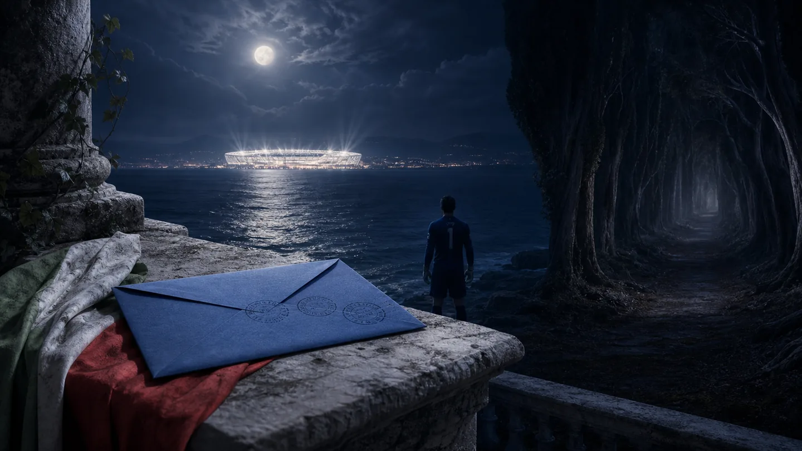
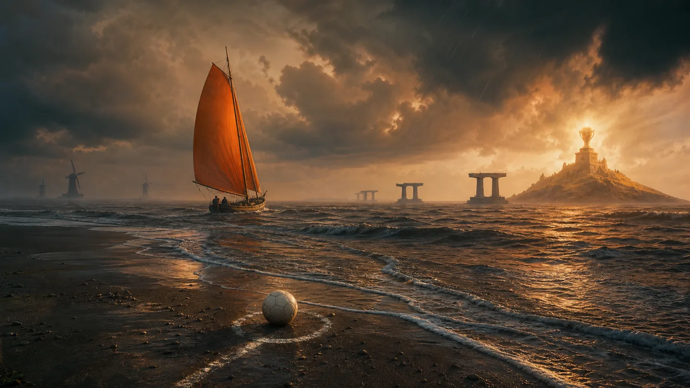
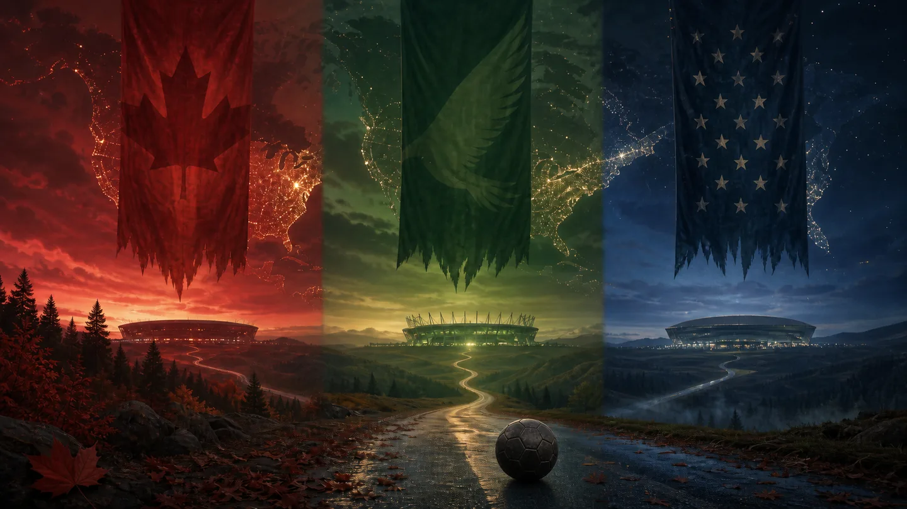
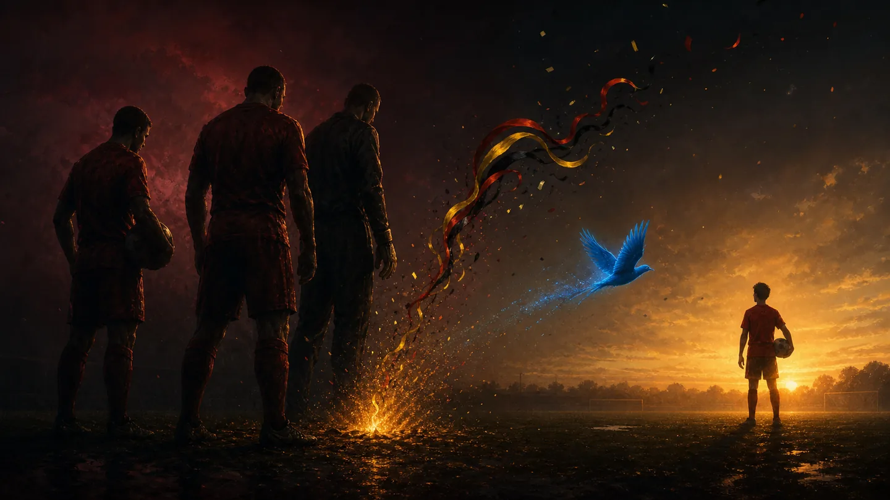
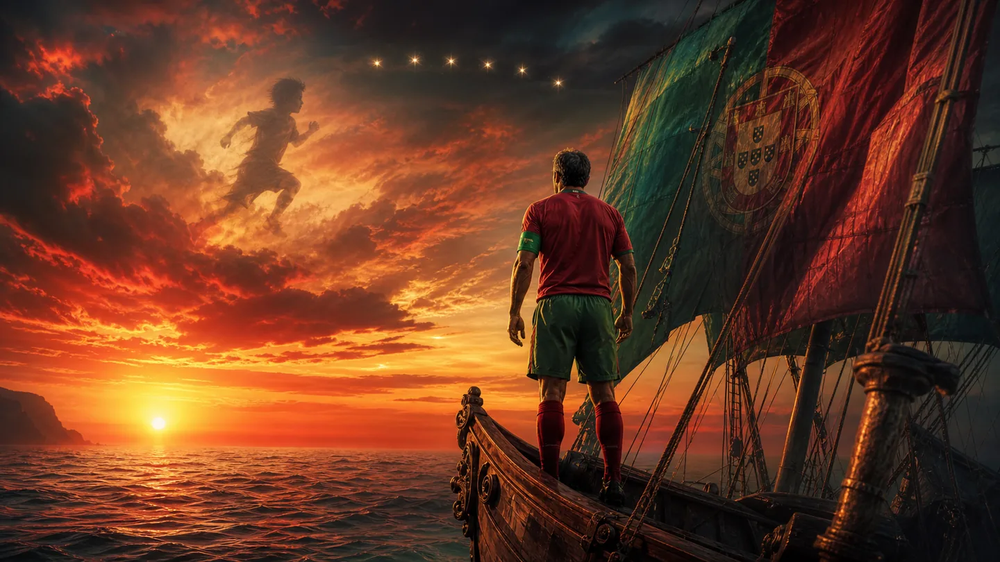
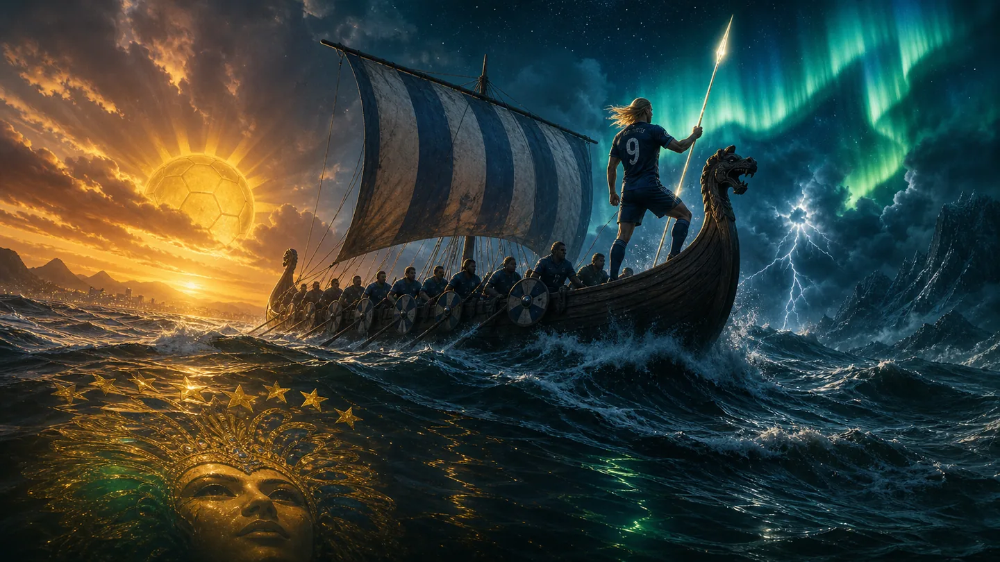
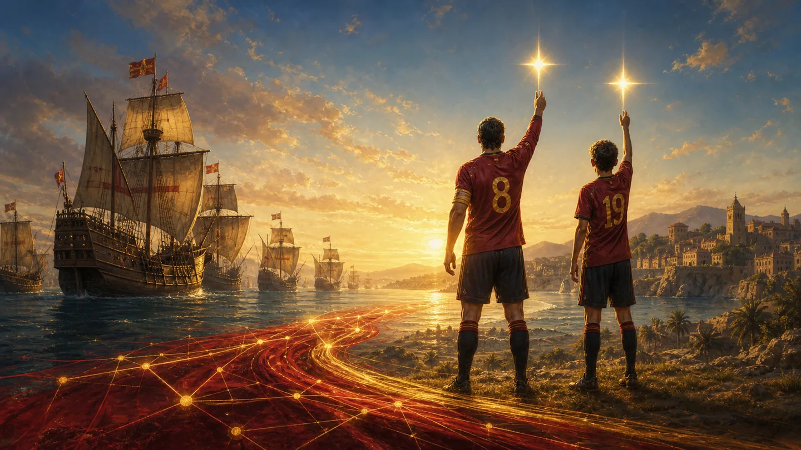
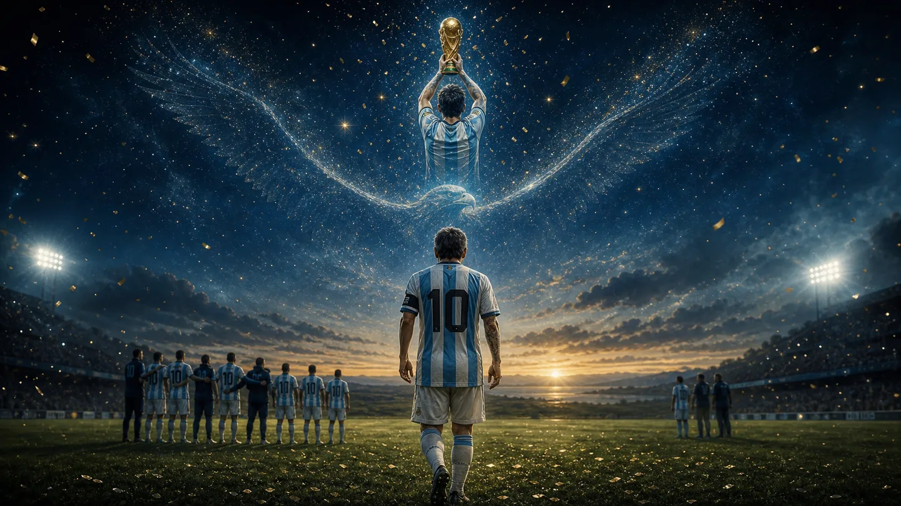

2026年的盛夏，风从太平洋越过落基山，又沿墨西哥湾一路北上，将四十八面旗帜吹向同一片天空。从墨西哥城的高原到温哥华的海岸，从达拉斯灼热的午后到纽约灯火的尽头，足球用一百零四场相遇，把陌生的名字写进共同的记忆。有人尚未启程便错过盛夏，有人在十二码前失去旧梦；有人携半生荣光走向落日，也有人第一次站到世界中央。冠军终归只有一个，故事却从来不只属于冠军。于是我愿循着莱茵河的风，经过亚平宁的失约、橙色潮汐的退去与潘帕斯雄鹰的最后远航，记下这个夏天所有的灿烂与破碎。因为世界杯之所以动人，不在于它许诺圆满，而在于明知聚散无常，我们仍愿为一颗滚动的足球，交出全部悲喜。
Chapter 01 · Germany
德意志的十二码寒夜
风萧声动，光转玉壶，一夜鱼龙舞，慕尼黑的风掠过安联球场，拉姆迎着漫天喧嚣弯弓搭箭，以一道划破长空的弧线叩开盛会之门，莱茵河畔纵马而来的少年骑士，让全世界看见了一个王朝初生的晨光。四年后的南非小将踏着英格兰与阿根廷扬名天下，2014年的巴西盛夏，克洛泽登上世界杯历史射手榜之巅，又在马拉卡纳的漫漫长夜里等来了金童的胸口一停、凌空一击。金雨落下，大力神杯被高高举起，那一刻，德国足球的铁血、秩序与荣光像莱茵河一样奔流不息。然而黄粱终有尽，故梦总须醒。2018年喀山的黯然，2022年多哈的风沙，直到2026年，七比一的开场恍若旧梦重燃，旋即却在负于厄瓜多尔后显出裂痕；纳格尔斯曼把世界杯变成一篇迟迟未能完成的战术论文，以繁复而滞涩的控球掩饰锋线的迟钝，面对巴拉圭筑起的铜墙铁壁，波士顿的十二码前，德国人曾经最笃定的铁律也轰然破碎，三粒罚球飞散在寒夜里，记分牌上的三比四像一道冰冷判词，依然绝断在了三十二强。梦醒时，没有柏林的彩旗，没有马拉卡纳的金雨，只有诺伊尔渐远的背影和基米希落寞的叹息。但我仍愿相信《浮士德》中的那句话：“凡是不断努力向上的人，终能得到救赎。”因为偏爱从来不是慕强，而是在盛名凋落、山河失色之后，仍愿守着那一点微光，等待下一次属于德意志战车的夏天。
Chapter 02 · Italy
亚平宁寄不出的第三封信

而亚平宁的告别，却早在新大陆的盛夏到来之前，便已写完。昔日的蓝衣军团也曾在柏林的苍穹下高举金杯，卡纳瓦罗身披漫天金雨，布冯守住意大利最后的城门，皮尔洛以一双诗人的眼睛，在绿茵场上写尽从容与优雅。谁能想到，二十年后，那支四度问鼎世界的王者，竟连一张通往世界杯的船票都求而不得。第一封信寄往俄罗斯，却在圣西罗的雨夜被瑞典退回；第二封信寄往卡塔尔，又在最后时刻被北马其顿击穿。于是他们写下第三封信，收信人是美加墨，是那个扩军至四十八队、看似比任何时候都更加宽阔的世界。可点球一点点飞离希望，最终为蓝衣军团盖下第三枚无法寄出的邮戳。欲渡黄河冰塞川，将登太行雪满山，曾经跨过无数险峰的亚平宁勇士，如今却迷失在但丁笔下那片“人生旅途中的幽暗森林”里，找不到通往盛夏的出口。世界杯的遗憾，并不都发生在大力神杯近在咫尺的终场哨后；有些人的姓名，连同未寄出的信笺，一起沉默在开幕式前的风中。当北美大陆灯火通明、诸国旗帜迎风升起时，亚平宁半岛只能隔海遥望——第三个没有意大利的世界杯已经开始，而他们的夏天，还停留在遥远的2006年。
Chapter 03 · Netherlands
橙色潮汐又一次退去

当亚平宁寄不出的第三封信沉入大西洋，来自低地之国的橙色风帆却已如约驶进新大陆，但有些宿命偏要等到十二码前，才肯露出它冷酷的面容。荷兰从来不缺少写进世界杯的才华：克鲁伊夫带着全攻全守的风暴席卷世界，罗本的单刀又曾离金色王冠只差一瞬。三次决赛，三次擦肩，从此“无冕之王”四个字，既是赞歌，也是判词。2026年的北美盛夏，橙色旗海再度浩荡，可当航船驶入蒙特雷，前方等待他们的是从阿特拉斯山走来的摩洛哥。近在咫尺的胜利被补时头球推回迷雾，加时无果，命运又把那枚熟悉的硬币抛向十二码。三名球员先后失手，布努张开双臂，像一堵横亘在海岸尽头的高墙，宣告橙色潮汐再一次在抵达彼岸之前退去。莎士比亚写过，人生之事亦有潮汐，乘势而上，方能驶向幸运；可荷兰人的潮水总是汹涌而来，又在最接近王座时悄然退散。只是无冕从来不等于无名，失败也不能抹去美丽，他们也许一次次输给十二码，输给终场前的一瞬，输给命运无常的风向，却从未输掉足球对于自由、进攻与浪漫的想象。
Chapter 04 · Morocco
阿特拉斯山下，雄狮仍未沉睡
橙色潮汐缓缓退去，蒙特雷的海岸却没有归于沉寂，潮水尽头，留下的是阿特拉斯雄狮踏过的足迹。四年前的卡塔尔，摩洛哥接连翻越比利时、西班牙与葡萄牙三座高山，成为第一支闯入世界杯四强的非洲球队，却在法国人的铁壁前止步；四年后再赴新大陆，他们已不再是等待奇迹垂青的黑马，而是怀揣旧恨、欲向高卢雄鸡讨还遗憾的复仇者。新星塞巴里三场三球，又在淘汰荷兰的十二码前罚进最后一球，在漫天红色旗帜中照亮通往法国的道路。可命运偏偏在最接近夙愿时横生风雪：伤病带走了阵中最锋利的弯刀，波士顿再遇法国，阿特拉斯雄狮少了最擅长撕开黑夜的人。哈基米仍在边路纵马疾驰，布努也曾拒绝姆巴佩的点球，但复仇的火焰尚未来得及燎原，便熄灭在伤病吹来的风中。沙漠之所以美丽，是因为它在某处藏着一口井；而摩洛哥足球的那口井，正藏在这样的年轻人身上。阿特拉斯雄狮只是负伤归山，从未真正沉睡，待少年伤愈、群山再醒，那声震动非洲的怒吼，终会再次响彻世界杯。
Chapter 05 · Hosts
东道主三面旗帜的落幕

阿特拉斯雄狮奔赴法国之前，曾踏过东道主加拿大的枫叶；对摩洛哥而言，那只是通往八强的一程，对加拿大而言，却已是足球史上从未抵达的远方。枫叶越过漫长冬天，留下队史世界杯首胜与首次进入淘汰赛的晨光。北境的红色缓缓落下，墨西哥的绿色烈火又在阿兹特克高原熊熊燃起，困住他们数十年的八强门槛看似终于将被焚毁，却仍在英格兰面前化作高原余烬。于是三位东道主中，只剩星条旗飘向西雅图；可权力对纪律规则的干预，让比赛蒙上了本不该有的阴影。所幸比利时把抗议写进每一次冲刺与射门，用堂堂正正的胜利送走了最后的东道主。电话可以让停赛延期，权力可以让规则暂时低头，却不能替任何球队赢下比赛。枫叶落下，烈火熄灭，星条旗降于西雅图的暮色——新大陆三场盛大的主场之梦，最终都没能越过十六强，但足球至少在最后一夜守住了自己的公正。
Chapter 06 · Belgium
红魔黄金残火的最后明灭

西雅图的胜利让人恍惚看见，比利时那簇燃烧了十余年的黄金之火，仍未完全熄灭。他们曾在绝境中完成逆转，又让德布劳内、卢卡库与库尔图瓦这一代人最后一次并肩纵马，将“欧洲红魔”的旧日威名重新写回绿茵。然而翻过东道主，前方已是年轻而锋利的西班牙。那位曾无数次守住红魔最后城门的巨人因伤走下草地，仿佛也带走了这一代人仅存的幸运；最后时刻的失误，让黄金一代再一次停在王座之外。梅特林克在《青鸟》中写过一场寻找幸福的漫长远行，而大力神杯，正像比利时始终未能捉住的那只青鸟：近在咫尺，又振翅远去。“夕阳无限好，只是近黄昏”，他们终于重新燃起红色烈焰，却已没有足够的时间将它烧到最后。或许这支黄金一代终究没有等来金色奖杯，但无冠并非无功。终场哨响，红魔转身走入暮色，那簇黄金残火最后明灭了一次，而后把未竟的荣光，交给了更年轻的人。
Chapter 07 · Croatia
魔笛最后的余音
红魔将未竟的荣光交给年轻人时，另一位年迈的指挥家，也在北美夜色中缓缓放下了手中的指挥棒。克罗地亚，一个人口不过数百万的亚得里亚海小国，却从初登世界杯便屡次站上领奖台；而这段奇迹的中央，始终站着那个从扎达尔战火中走出的清瘦少年——卢卡·莫德里奇。2006年，他第一次登上世界杯舞台；2026年，四十岁的他第五次披上红白格战袍，并完成国家队二百场里程碑。岁月带走了旧日伙伴，却没有带走魔笛脚下的节拍。只是命运为他安排的淘汰赛对手，恰好也是一位不肯向时间低头的故人。四十岁的莫德里奇对阵四十一岁的C罗，像两位旧时代的骑士在落日前最后一次拔剑。终场哨响，莫德里奇环顾看台，向仍在高唱的球迷缓缓鼓掌。真正伟大的乐章从不会因演奏者离席而消散——一次亚军、两次季军，二十年国家队岁月，他早已把一个小国的名字写进足球最辽阔的史诗。“曲终人不见，江上数峰青”，魔笛的声音渐渐远去，那段黄金旋律却将长久回响在人间。
Chapter 08 · Portugal
葡萄牙船长驶向落日

多伦多的终场哨响，莫德里奇停在原地，C罗上前拥抱了这位相识多年的故人。一位旧时代的指挥家就此退场，另一位年迈的船长则继续扬帆，只是谁也没有想到，他不过比故人多航行了一程。从2006年的德国之夏到2026年的北美大陆，二十年、六届世界杯，那个从马德拉岛迎风奔跑的少年，早已把青春写成纪录，把葡萄牙从伊比利亚半岛的一叶孤舟，带成令世界敬畏的海上舰队。四十一岁的他仍在进球，仍为船长的最后一程续上风帆，可前方等待他的，偏偏是隔海相望、纠缠百年的西班牙。伊比利亚半岛的另一面旗帜继续远航，葡萄牙的船帆却在终场哨中缓缓落下。卡蒙斯曾在《卢济塔尼亚人之歌》中写那些“越过从未航行之海”的水手，而C罗也用二十年越过了葡萄牙足球从未抵达的海域。“孤帆远影碧空尽，唯见长江天际流”，他的身影终将消失在世界杯的海平线上，但那艘刻着七号的航船，已经驶进葡萄牙永不褪色的历史。
Chapter 09 · Norway × Brazil
维京战船驶过桑巴旧梦

当葡萄牙的孤帆消失在大西洋的落日里，海的南方仍回荡着桑巴鼓点，海的北方却已响起维京战船沉重的桨声。五星巴西携着半个世纪的荣光而来，第六颗星辰仿佛只待升上夜空；然而从北海归来的挪威，已经为这次重逢等待了二十八年。厄德高执掌罗盘，哈兰德如破冰而出的长矛，他们把一个沉睡多年的国度重新带回世界中央。“大鹏一日同风起，扶摇直上九万里。”二十八年前的判词被命运重新拆封，北海雷霆击碎桑巴旧梦，巴西迎来三十六年来最早的世界杯告别，而挪威第一次驶入八强。可维京史诗也未能写到王座之前，英格兰最终扼住了他们的航路。易卜生写道：“世上最强大的人，正是最孤独地站立的人。”那一夜，哈兰德站在潮水退尽的草坪上，身后没有加冕的号角，只有万里风霜。旧王已经退场，新王却尚未登基；但足球的壮阔，原就在于王冠终会蒙尘，而年轻的船，永远驶向下一片海。
Chapter 10 · England
三狮军团未能抵达的故乡
维京战船最终搁浅在英格兰脚下，而三狮军团接过那阵北海风，继续向六十年前的故乡赶路。自温布利的金色午后以后，“足球回家”便成了一句唱遍英伦、又屡屡消散于异乡夜色的古老歌谣。凯恩仍在迟暮之前一次次举起长剑，贝林厄姆更如少年兰斯洛特，将三狮军团送入四强。六十年的长路只剩一步，亚特兰大的夜空仿佛已经映出温布利旧日的金光，歌声也似乎提前越过了大西洋。可是莎士比亚早已写下：“真爱的道路从来不曾平坦。”阿根廷在最后时刻让故乡的灯火由近及远，比分像一道缓缓合拢的城门。好在故事并未止于沉默。面对法国，萨卡用帽子戏法点燃迈阿密，英格兰赢得季军，也写下自1966年夺冠后最好的世界杯名次。“行到水穷处，坐看云起时。”他们终究没有带足球回家，却带回了一代人尚未熄灭的希望。或许所谓故乡，从来不是一座触手可及的奖杯，而是无论多少次倒在归途，仍有人披上白衣，循着那首旧歌，再度出发。
Chapter 11 · France
高卢王朝最后的焰火
当英格兰收下铜牌，迈阿密记分牌的另一面，已成为法兰西一个时代的讣告。德尚站在场边，望着那片自己征战了十四年的疆土：2018年莫斯科的金雨，2022年卢塞尔的悲歌，以及今夜满地狼藉的蓝色余烬。法国曾以为这又是一次通往王座的远征，姆巴佩快若流星，登贝莱锐如新月，高卢雄鸡向连续第三届世界杯决赛发起冲锋。然而西班牙用绵密的传递收紧罗网，法国引以为傲的锋刃被无声折断。季军战半场的巨大落后，也没能让姆巴佩低头，他将废墟烧成最后一场焰火，终究还是未能改写结局。德尚的谢幕没有奖杯，只有终场哨后经久不散的掌声；可就在王朝退潮之时，姆巴佩却以世界杯生涯二十二球独立于历史射手榜之巅。个人登上群峰，祖国却跌出领奖台，这大概便是命运最冷峻的修辞。加缪说：“在隆冬，我终于知道，我身上有一个不可战胜的夏天。”法兰西失去了一位功勋主帅，却没有失去未来；今夜熄灭的只是王朝最后的篝火，而不是高卢土地上永不复燃的春天。
Chapter 12 · Spain
黄金海岸升起第二颗星

当法兰西的蓝色潮水退下，伊比利亚半岛的红色风帆终于驶过世界之巅。十六年前的约翰内斯堡，伊涅斯塔刺破荷兰人的长夜，为西班牙摘下第一颗星；十六年后，旧日的黄金一代早已散入岁月，亚马尔、佩德里与罗德里却从地中海的晨光里走来，印证了“桐花万里丹山路，雏凤清于老凤声”。这条加冕之路并非生来铺满玫瑰，他们从质疑中重新校准航向，送别葡萄牙，越过比利时，又熄灭法国连续三届闯入决赛的野望。决赛夜，卫冕冠军阿根廷筑起最后的城墙，九十分钟的钟声落尽，王座仍隐没在加时赛的迷雾深处。直到费兰·托雷斯挥动左脚，将十六年的等待送进球门。马德里的灯火与纽约的金雨遥遥相拥，罗德里捧起金球，也捧起大力神杯。诗人马查多说：“行路人，世上本没有路，路是在行走中形成的。”从哈维与伊涅斯塔，到罗德里与亚马尔，名字会老去，传控的河流却从未停止奔涌。昔日的无敌舰队终于再次驶抵黄金海岸，而斗牛士的红衣之上，自此有了两颗永不沉没的明星。
Final Chapter · Argentina
王冠之外，仍是球王

大力神杯在西班牙人手中升起，镜头越过漫天金雨，最终停在梅西身上。三十九岁的他站在纽约的深夜里，静静望着那座四年前曾被自己亲吻过无数次的奖杯，眼中没有2014年马拉卡纳的茫然，也没有那些旧日里近乎宿命的疼痛。因为早在2022年的卢塞尔，他便带领阿根廷越过荷兰的铁蹄、克罗地亚的风雪与法国的惊涛，在点球大战最后一声轰鸣里，为潘帕斯高原带回阔别三十六年的世界冠军。那一夜，他已经完成了封王的全部仪式；此后所有奔跑，都不再是为了向世界证明自己，而只是因为热爱尚未冷却，因为蓝白色的风仍在召唤。于是四年之后，当人们为年迈的卫冕冠军定下“保八争四”的现实愿望，他却又一次穿上十号球衣，从黄昏走向盛夏。“老骥伏枥，志在千里；烈士暮年，壮心不已。”首战的帽子戏法宣告归来，随后又一度登上世界杯历史射手榜之巅。此后的道路步步惊心，阿根廷一次次从悬崖边归来；半决赛短短七分钟，三十九岁的老人再次让时间倒流，让一支原本只求八强、梦想四强的球队，竟站到了世界之巅的门前。只是最后的门没有为他们打开，阿根廷距离第四颗星，只差那个再也没有到来的进球。终场哨响，梅西低下头，随后又走向队友，拥抱那些陪他走到这里的人。海明威说：“人可以被毁灭，但不能被打败。”西班牙赢得了决赛，却无法夺走梅西早已写入足球史的名字。我们爱他，从来不只是因为他举起过多少奖杯，而是因为那个曾被误解、被苛责、被命运反复推倒的少年，始终没有放下对那袭蓝白球衣的赤诚；是因为在荣誉圆满、年华渐老之后，他仍愿拖着疲惫的双腿，为蓝白色再奔跑最后一个盛夏。如果说2022年的冠军，是命运归还给梅西迟到了十六年的王冠，那么2026年的亚军，便是他写给足球世界最后一封未曾封口的情书。它没有以金色结尾，却依然足够动人。王冠可以旁落，时代终会远去，但梅西无需再成为一次世界冠军来证明自己——因为当他转身走入夜色，整片潘帕斯草原都会记得：这里曾有一只雄鹰飞过，而我们有幸，见过他全部的天空。
当纽约夜空最后一片金色纸屑缓缓落下，2026年的世界杯终于从盛夏变成往事。西班牙带走第二颗星，阿根廷留下未竟的远征；德意志飞散的十二码、荷兰退去的橙色潮汐、红魔将熄的残火，以及莫德里奇与C罗驶向落日的背影，也都随着终场哨声沉入时间。有人在开幕之前失约，有人在距离王座一步之遥时转身；有人赢得了奖杯，有人却以失败完成了比胜利更加漫长的告别。可我们真正带走的，从来不只是比分与名次，而是某个少年横空出世的清晨、某位老将不肯低头的黄昏，以及万千陌生人为同一粒进球拥抱欢呼的瞬间。“人生如逆旅，我亦是行人”，世界杯不过是四年一度的驿站，却让我们在短暂相逢中看见勇气、衰老、命运与热爱。诸神终会退场，王冠也将易主，但只要下一片盛夏仍有哨声响起，我们便会再次循光而来，把未说完的故事，交给下一阵风。